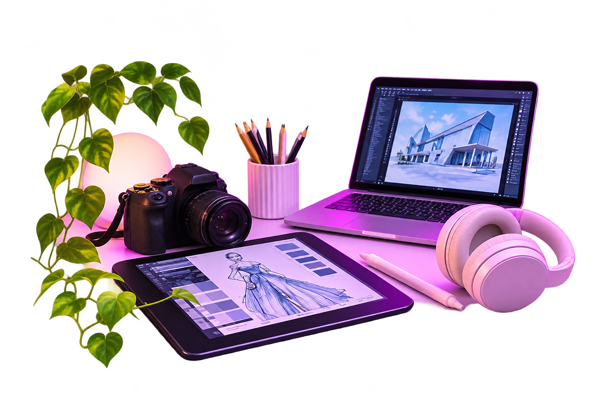

Мир постоянно меняется, а вместе с ним появляются новые профессии. Развитие технологий, искусственного интеллекта и виртуальной реальности открывает перед людьми новые возможности. Уже сегодня специалисты создают виртуальные миры, разрабатывают умные устройства, обучают нейросети и придумывают новые способы решения повседневных задач. Профессии будущего объединяют творчество, современные технологии и научные знания. Для работы в этих сферах важно уметь мыслить нестандартно, находить решения сложных проблем и постоянно учиться новому. Многие из этих профессий только начинают развиваться, поэтому у современных школьников есть возможность стать одними из первых специалистов в новых областях.
Придумывает новые модели одежды, подбирает ткани, цвета и создаёт модные коллекции.
Создаёт логотипы, плакаты, рекламу и оформление сайтов. Использует специальные компьютерные программы.
Проектирует здания, дома и общественные пространства. Сочетает творчество с техническими знаниями.
Создаёт объёмные модели персонажей, предметов и зданий для игр, фильмов и других цифровых проектов.
